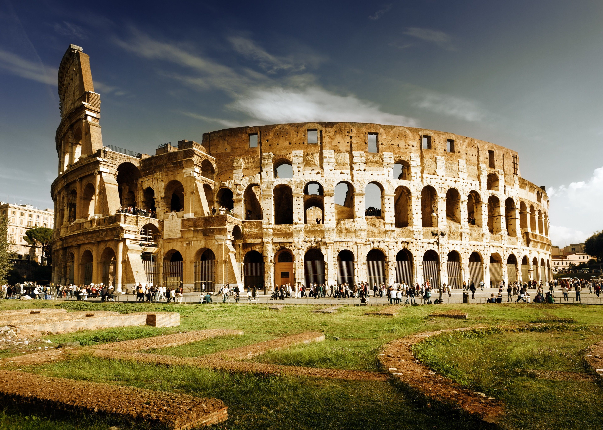

Colisée
Histoire et Construction
Le Colisée, ou Amphithéâtre Flavien, est l’un des monuments les plus emblématiques de la Rome antique et une des plus grandes merveilles architecturales du monde. Construit sous le règne de l’empereur Vespasien et achevé par son fils Titus en 80 apr. J.-C., le Colisée a été conçu comme un symbole de la puissance et de la grandeur de l’Empire romain. Construit en calcaire, béton et briques, il pouvait accueillir plus de 50 000 spectateurs. Sa fonction principale était d’abriter des spectacles tels que les combats de gladiateurs, la chasse d’animaux exotiques et les exécutions publiques. Ces événements n’étaient pas seulement du divertissement, mais aussi une manière de démontrer la force de Rome et de fidéliser son peuple.


La Vie à l’Intérieur du Colisée
Assister aux événements au Colisée était une expérience vibrante et émouvante. Les gradins étaient divisés par classes sociales : les sénateurs et l’élite occupaient les places les plus proches de l’arène, tandis que les citoyens ordinaires et les esclaves se trouvaient dans les sections supérieures. Les combats de gladiateurs étaient l’attraction principale. Ces combattants, souvent des esclaves ou des prisonniers de guerre, s’entraînaient durement pour lutter pour leur survie, tandis que la foule encourageait leurs favoris. De plus, le Colisée était parfois inondé pour simuler des batailles navales, une démonstration impressionnante des compétences en ingénierie des Romains.Patrimoine et Signification
Après la chute de l’Empire romain, le Colisée a connu des siècles d’abandon, servant de carrière de matériaux de construction et même de lieu religieux. Aujourd’hui, il est l’un des symboles les plus reconnus de l’histoire de Rome et un site du patrimoine mondial de l’UNESCO. Bien qu’il soit partiellement en ruines, le Colisée continue d’inspirer des millions de visiteurs chaque année. Il témoigne de l’ingéniosité et de la complexité de la civilisation romaine, nous rappelant à la fois la force et la fragilité d’un empire qui a autrefois dominé le monde.